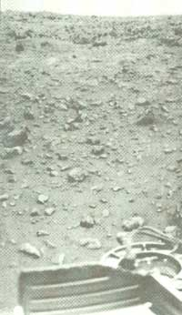
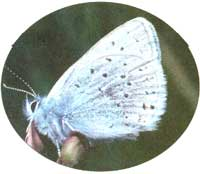
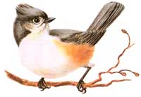

SEASONS
In past columns I've discussed robins and grackles and spring peepers. But two other signs that spring is coming are an increase in the songs of the tufted titmouse and the appearance of tiny butterflies called spring azures.
Most people who have bird feeders and live in the eastern half of the United States are familiar with the tufted titmouse. This bird is small but distinctly larger than its relative, the chickadee. Few other small birds have the titmouse's tufted crest of feathers on the head. The titmouse is mostly gray, but it has a white breast with buff-colored flanks and a white face surrounding oversized beads of black eyes. It is interesting that the titmouse usually sits more upright than the chickadee, but you don't need a subtle feature like that to tell the titmouse apart from the littler, round-headed, black-bibbed chickadee.
Tufted titmice are the only kind of titmouse in the whole eastern half of the United States (a few other kinds are found in south Texas and parts of the Southwest). While the tufted has spread farther north with the help of feeders and has extended its range to southern Ontario, it has not yet reached the north parts of the northernmost tier of states.
The titmouse emits its notes all year long. But when the February days are warm enough for me and the titmouses to be out and about, the forest begins to echo with a noticeable increase in the number of their calls. Few small birds have a voice so amazingly loud. The most common version of the call is said to sound like "Peter, Peter, Peter," but there are variations-one of which (to my mind) sounds like "GOOD bird, GOOD bird." Roger Tory Peterson states that-although the calls are somewhat similar to those of chickadees-the tufted titmouse's are "more drawling, nasal, wheezy, and complaining." But, as with the chickadees, the complaining of these admirable little birds is likely to amuse you and bring you good cheer-especially if it comes in February and makes you hopeful that spring is coming with its full symphony of birdsong.
Suppose, however, that March comes-March and maybe even the official first day of spring-and the weather is still cold. Where do you look for hope of real spring? It may come fluttering past you in the form of a little spot of color. The spring azure is a butterfly that looks like the tiniest piece of blue sky brought down to Earth to dance among the first grasses. It measures 0.4 by 1.1 inches and yet it's twice as big as a related species, the Western Pygmy Blue (America's smallest butterfly). The spring azure occurs in over 13 different variations and you might very well get close enough to see the tiny details. It is a member of the family of butterflies called blues. They are complemented by copper-red, black-spotted little butterflies called coppers (the American copper may be the United States's most common butterfly).
You may have to wait a little later to see your first copper of the year. The azure blue is often the first butterfly of all, frequently seen by late March (at least around 40° North latitude). And when you witness a butterfly fluttering past you on a somewhat chilly March day, you'll know that the real spring must truly be near. A mobile patch of blue not much bigger than your fingertip may change the grey mood that has been oppressing you for months!
Long before you see coppers dancing with blues in a field or roadside, you can step outside at dusk this February and see tiger-colored Mars rising in the fading blue sky in the east-northeast.
After darkness has fully fallen there's no mistaking this impressive planet. All evening long it rivals the brightest point in the sky, the star Sirius. But whereas Sirius is white with a hint of blue and twinkles. Mars burns orange-yellow and shines steadily.
Mars is brightest and closest on February 11. It looks much the same all month before it begins a rapid fade, as Earth starts to leave it behind in March. In early February it is still fairly near the bright star Regulus and "the Sickle" of stars that forms the head and chest of Leo the Lion. But by late March it is over in dim Cancer the Crab, not far from me fuzzy naked-eye patch of glow that is the Beehive Star Cluster.
Mars may look fire-colored but it will not keep you warm on February nights. But what does the planet now look like in telescopes? Don't get your hopes too high. If your telescope is good, it will at least show you Mars as a small but tantalizing ochre disk. If your telescope has a lens or mirror of 6 inches or more and the atmosphere is quite steady, you may even see a few dark, seemingly greenish markings on the globe and perhaps the tiny white dot of the rapidly dwindling north polar ice cap. But this "close approach" of Mars is one of the least close possible. In the year 2003, Mars will look almost twice as big as now and dozens of surface features should be within range of amateur telescopes.
The northern hemisphere of Mars that is now tilted somewhat toward us is experiencing late spring. Yet temperatures there may not be getting above 0°F. If that makes you cold all over again, consider how in certain parts of our own planet-especially on the eastward slopes of the Rocky Mountains from Alberta to Colorado-spring warmth can come blasting in over the course of hours or even minutes.
The phenomenally fast and great episodes of heating in late winter within a few hundred miles east of the Rockies are caused by the wind known as the chinook. The chinook is a west or southwest wind heated by compression as it comes down the mountain slopes and hits the cold, dense air which has flooded down from Canada and the Arctic over the Great Plains. The chinook is known as the "snow-eater" because its hot, dry blast can evaporate a foot or more of snow in just a few hours. It often occurs with a clear sky overhead but an arch of cloud visible over the mountains.
Some of the most extreme cases of the chinook have occurred not in late winter but in January. After the extreme warming can come an even greater temperature drop. For instance, in a 24-hour period on January 23-24, 1916, the temperature in Browning, Montana, fell from 44°F to -56°F: a 100 degree drop! But even more amazing was the chinook warming in the Black Hills at Spearfish, South Dakota, that began at 7:30 a.m. on January 22, 1943. In this case, the temperature rose 49°F in 2 minutes! The thermometer showed a rise from -4° to 45°F. Unfortunately, an hour and a half later, the temperature, which had crept up to 54°F, fell back to-4°-a drop of 58 degrees-in 27 minutes.
Few small birds have a voice so amazingly loud as the tufted titmouse.
St. Patrick and His Day
St. Patrick was a real person, but some important facts about him remain uncertain. He may have been born as early as 373 A.D. or as late as 395 and may have died in 461 or in 492. We're not sure whether March 17 was his birthdate, deathdate, or neither. We're not even certain where he was originally from, though we do know for certain that he wasn't from Ireland. He was kidnapped and brought to Ireland as a youth. After 6 years of slavery, he escaped and left the country. But after training in the church, he returned to spread the word of Christianity throughout Ireland. He lit an Easter fire in defiance of the High King and then defeated the magic of the King's Druids.
Of course, Patrick's most famous legendary deed was his driving of the snakes from Ireland with a drum and a sermon. If I recall correctly (not to diminish the great saint's respectability), there really are no snakes (or no common ones?) in the Emerald Isle. And speaking of green: the shamrock became a symbol of Ireland and St. Patrick's Day because Patrick used it as a means for explaining the Trinity of Father, Son, and Holy Ghost. Among the considerable number of miracles attributed to Patrick: raising his father and several other people from the dead and burning snow to make a fire. His staff was supposedly given to him by Christ in a vision.
St Patrick's Day also marks the beginning of the garden season in Ireland, the time when peas-the earliest of the vegetables-can be planted. The holiday in the Emerald Isle still retains much of its original religious significance, whereas, in the United States, St. Patrick’s Day is considered a secular holiday by most people-a day when everyone is supposed to sport a few pieces of green attire and try to be at least a little Irish. According to the history books, the first celebration of the holiday on this side of the Atlantic seems to have been in Boston in 1737.
1 1 First day of Ramadan, Moslem month of fasting (begins at previous sunset-if the "young" crescent Moon is glimpsed).
2 Candlemas (feast of the Purification of Mary); Groundhog Day (if the creature sees his shadow, tradition says we'll have six more weeks of wintery weather).
3 Asteroid Ceres at opposition (opposition is a good time to see a celestial object and Ceres is the largest asteroid-over 600 miles across-but you need binoculars and a detailed finder chart from a magazine like Sky & Telescope to identify this worldlet).
5 Halfway point of winter.
6 Great snowstorm of 1978 in southeast New England-38 inches in Rhode Island, 27 inches in Boston (where all travel was banned for a week by the governor); the famous Cold Friday in the South and Midwest in 1807-the temperature stayed below 0°F. in Ohio and Kentucky.
7 FIRST QUARTER MOON, 7:53 A.M.
9 The historic battle between the ironclad ships Monitor and Merrimac took place on this date in 1862 in generally fair weather.
11 Mars at opposition and closest. Opposition is when a planet is opposite the Sun and therefore rising at sunset and visible all night long. It is also the time when an outer planet like Mars will be closest to Earth and appear both biggest (in the telescope) and brightest. At this opposition, however, Mars gets no closer than about 63 million miles from Earth. For more details, see the text of the column.
12 Lincoln's Birthday (born 1809).
14 Valentine's Day.
15 FULL MOON, 7:16 A.M. (the Snow Moon, Hunger Moon, or Wolf Moon).
16 Sun enters the constellation Aquarius.
17 Last sight of Saturn in dusk near this date.
19 The star Spica is hidden by the Moon around dawn in Alaska and after sunrise in Hawaii (use binoculars or telescope to see the actual instant of hiding); Sun enters the astrological sign Pisces.
20 Presidents Day.
21 Chinook wind (see text of column) lifted temperature by 83°F. in Granville, North Dakota, on this day in 1918.
22 Washington's Birthday (born 1732); LAST QUARTER MOON, 8:04 A.M.
23 Moon fairly near Jupiter in south at dawn.
26 Moon near Venus in southeast at dawn. 28 Shrove Tuesday; Mardi Gras; very thin Moon may be visible very low in east about 20-30 minutes before sunrise; no New Moon this short month (but two each in January and March).
1 Ash Wednesday (Lent begins, goes for 40 days not counting Sundays and thus ends at Easter); NEW MOON, 6:49 A.M.
2 Texas Independence Day.
3 Pure Monday; Saturn in conjunction with the Sun (and therefore unviewable).
7 A total eclipse of the Sun was seen well from parts of Virginia on this day 25 years ago.
9 FIRST QUARTER MOON, 5:12 A.M.
12 Sun enters constellation Pisces.
14 Mars at aphelion (farthest from Sun in space), 1.67 Astronomical Units from the Sun. An "astronomical unit" or "a.u." is the average distance between Sun and Earth, a bit less than 93 million miles. Earth's distance from Sun varies by only about 3% during the course of the year. Mars has a far less circular orbit, so can come in to about 1.38 a.u. (as it did last April).
15 Andrew Jackson Day (in Tennessee); the Ides of March (at which Julius Caesar was assassinated in 44 B.C.).
16 FULL MOON, 8:26 P.M. (the Sap Moon, Crow Moon, or Lenten Moon).
17 St. Patrick's Day.
18 Moon very near the star Spica this evening.
19 The swallows return to San Juan Capistrano in California.
20 Spring equinox, 9:17 P.M.; Sun enters astrological sign Aries.
22 Moon very near Jupiter in south at dawn.
23 LAST QUARTER MOON, 3:10 P.M.
25 Annunciation (Lady Day) the day that Gabriel announced to Mary she would bear Jesus (this day is simply 9 months before December 25, the date tradition says that Christ was born on);
Mars halts retrograde motion, 6 degrees east of the Beehive Star Cluster in Cancer the Crab (in the weeks after this, watch the planet appear to drift back eastward- toward Regulus and Leo-in relation to the background of stars).
26 Mercury-Saturn conjunction at dawn-use binoculars and look very low in the east only about 30 minutes before sunrise in hopes of beholding the brighter Mercury and just possibly the dimmer point of light of Saturn very near it; Mothering Sunday (traditionally, a slight reprieve from the fasting of Lent at which boys could come home from school to visit their mothers).
28 Moon fairly near Venus in southeast at dawn.
30 NEW MOON (second this month), 9:10 P.M.
31 Good shot at seeing very thin Moon very low in west about 30 minutes after sunset.
|
 In 2003, Mars will appear nearly twice as big in telescopes as it does now. |
 TOM BRANCH/PHOTO RESEARCHERS, INC. |
 |
|
|
|
|